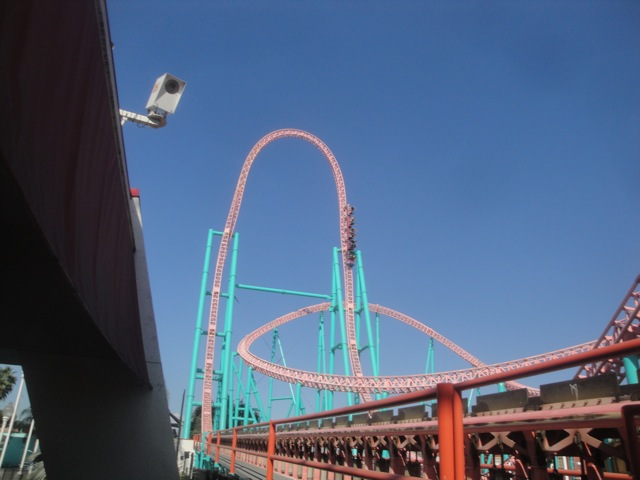
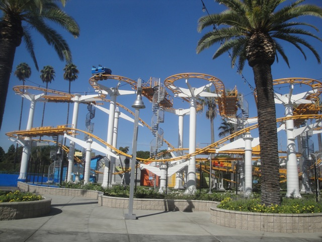
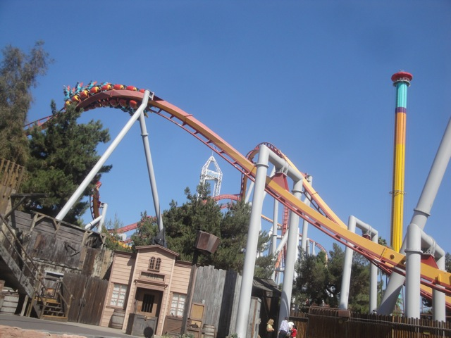
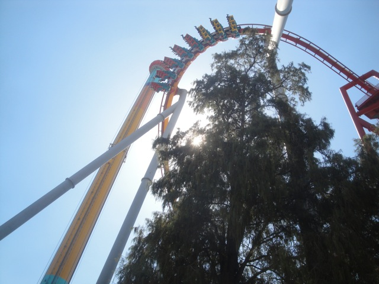
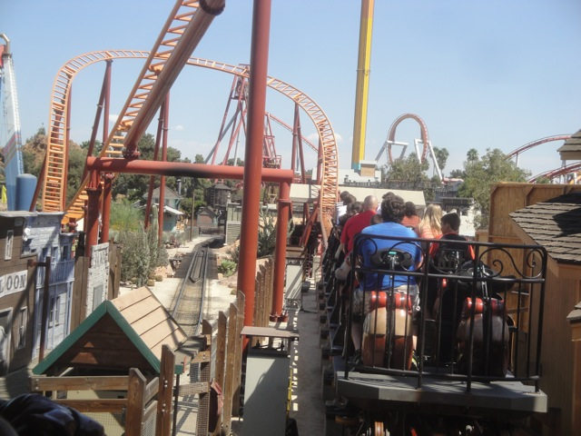
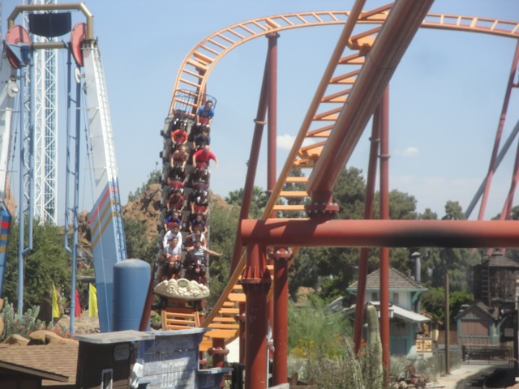
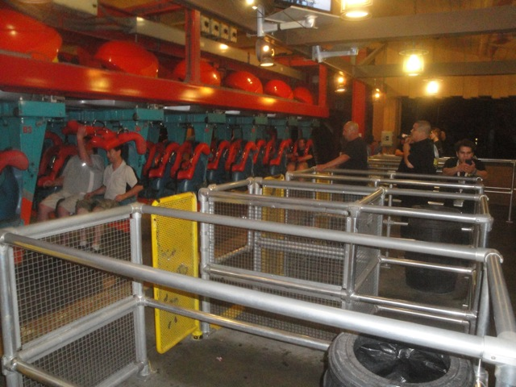

| |
West Coast Bash 2013
Well, the day has finally come. Westcoast Bash is finally here, and after skipping out on it for 2012, it was good to get back for 2013. This year was different as we decided to do the Knotts day instead of the SFMM day for obvious reasons. And Knotts put out quite a lot for us to do.
First off, they gave us a lights on ride on Calico Mine Ride with Knotts Historian, Eric Lynxwilder to narrate about the history instead of the usual audio.
"Excuse me sir, but why are you planning on blowing up the Calico Mine Ride?"
Hmm. There's something about this ceiling. Like a bunch of something just hanging from it. But then again, don't be too surprised coming from the Glory Hole.
 "Wow. I never knew that the Calico Mine Ride was....OOH!!! PRETTY!!!!" *snaps photo*
"Wow. I never knew that the Calico Mine Ride was....OOH!!! PRETTY!!!!" *snaps photo*
As if that wasn't good enough, we then got a backstage tour of Timber Mtn Log Ride. =)
In case you ever get lost on the Timber Mtn Log Ride, here's a map of the layout.
We got very close and personal with Timber Mtn Log Ride.
I just want to make sure all of you can swim in the event one of you idiots turns on the main pumps.
How much for a peice of the Timber Mtn Log Ride?
"SIT DOWN!!! SIT DOWN!!!! SIT DOWN!!!"
"Ugh. Who's acting like a jackass again?"
Yep. They let us just walk around the flume. This is awesome!!!
 "What do you mean its frowned upon to give your dog Whiskey!!?"
"What do you mean its frowned upon to give your dog Whiskey!!?"
"Come on. Let us in. We'll be good. We promise."
Dammit!!! Sorry about all the graffiti on your pipes.
 Xcelerator from the Timber Mtn Log Ride.
Xcelerator from the Timber Mtn Log Ride.
Sorry log. But we all have to go there sooner or later.
Ooh. Cool retro sign.
Thanks so much for the backstage tour of Timber Mtn Log Ride. This was totally awesome. =)

All right. Now lets move onto morning ERT.
 It was an awesome morning. Managed to get in 7 rides. =)
It was an awesome morning. Managed to get in 7 rides. =)
 That launch gets more and more powerful as I ride it.
That launch gets more and more powerful as I ride it.
I decided to take a quick ride on Boomerang since its been a while. Ugh, after riding smooth fun Boomerangs at Six Flags Fiesta Texas and Elitch Gardens, this was REALLY unpleasent. Won't be riding this for a while.

I even took in a quick ride on Coast Rider. Cause hey. Why not.
 After all the fun of our ERT, we went out for a group photo with one of the most famous Beagles out there, Snoopy.
After all the fun of our ERT, we went out for a group photo with one of the most famous Beagles out there, Snoopy.

Man, we're on a roll today. Even with the park open, we just walked right on Silver Bullet.
 Silver Bullet just keeps getting better and better with age.
Silver Bullet just keeps getting better and better with age.
Reports of a plague have been sweeping across Knotts Berry. They're larger than West Coast Bash and they'll take a walk on wait and turn it into an hour wait. Luckily, this plague is contained and slowly moving, so prevention is incredibly easy.

Silver Bullets first drop with Windseeker in the background.
Oh yeah. Windseeker. I forgot all about that ride and now after only 2 years, its moving away. Meh, I'll be fine without it.
Wow!!! Thanks for the bonus ERT on Jaguar!!! =)
Not a sign I like to see. Hoping that Montezooma will be ready for our night ERT.

Hmm. There's a certain something in this Pony Express photo that won't be here for long.

I love ponies. They're delicous.
"Drop your Boysenberry Tea and no one gets hurt!!!"
Not very many I quickly learned.
Knotts served us an abundance of food for West Coast Bash.
And of course, there was TPR Quest, which was just a ton of fun. =)
"As demonstrated by our model here, the all beer diet will bring you the sexy body you desire."
The list of perks at West Coast Bash has now grown to include shaving as well. (Warning, for half price, you'll only get half the job. Don't discover that the hard way).
Sweet!! Time for some Q&A with Knotts. Many questions I had were answered here.
"Next person who asks about Windseeker will be ejected from West Coast Bash without a refund. Understand?"
In case you didn't know, there is an actual Blacksmith here at Knotts Berry Farm.
Oh yeah. Ghostrider is closed for its annual maintenence.
We also got a backstage tour of one of the upcoming mazes for Knotts Scary Farm, Nevermore. And this was the only room we could take pictures in.
Something about this office really makes me feel at home.
 More excitement guys!!! This is after all, THE BEST RIDE EVER!!!!!
More excitement guys!!! This is after all, THE BEST RIDE EVER!!!!!
I figured I have all this time. Why not spend it watching a show.
"You gonna eat that chicken you're wearing?"
Well night ERT has begun, as considering how someone in our group had never done Supreme Scream, we obviously had to go and fix that.
 YAY!!! They got Montezoomas Revenge open!!!
YAY!!! They got Montezoomas Revenge open!!!
 Glad to see Knotts continue to preserve this Schwarzkoph Classic. Keep up the good work. =)
Glad to see Knotts continue to preserve this Schwarzkoph Classic. Keep up the good work. =)

Yeah. I'm at West Coast Bash all right.
Well that was another West Coast Bash. And as always, it was awesome and thanks for everything. Good bye Knotts. I'll see you again soon, and good bye Windseeker. Hope you do better at Worlds of Fun.
Home
|